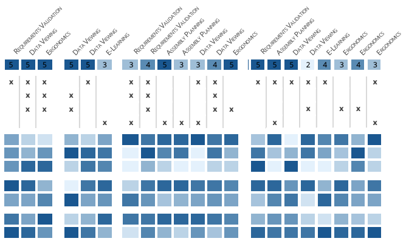
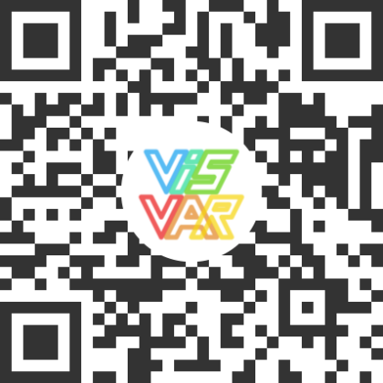

VR Collaboration in Large Companies: An Interview Study on the Role of Avatars

Venue. ISMAR (2021) Short Paper
Authors. Natalie Hube, Katrin Angerbauer, Daniel Pohlandt, Kresimir Vidackovic, Michael Sedlmair
Abstract. Collaboration is essential in companies and often physical presence is required, thus, more and more Virtual Reality (VR) systems are used to work together remotely. To support social interaction, human representations in form of avatars are used in collaborative virtual environment (CVE) tools. However, up to now, the avatar representations often are limited in their design and functionality, which may hinder effective collaboration. In our interview study, we explored the status quo of VR collaboration in a large automotive company setting with a special focus on the role of avatars. We collected inter-view data from 21 participants, from which we identified challenges of current avatar representations used in our setting. Based on these findings, we discuss design suggestions for avatars in a company setting, which aim to improve social interaction. As opposed to state-of-the-art research, we found that users within the context of a large automotive company have an altered need with respect to avatar representations.
